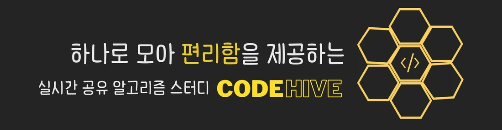

편집 동기화와 채팅·실행 메시지의 경로 분리
코드·문서는 Yjs+CodeMirror/Quill로 동기화하고, 채팅·공지·코드 실행 결과는 Spring STOMP의 방별 채널로 전달합니다.
고려할 점 역할에 맞는 도구를 쓰지만 Yjs와 STOMP의 연결 상태·방 식별자를 함께 관리해야 합니다. 동시 접속 수나 충돌 복구 성능은 공개 자료로 입증하지 않습니다.
Backend / Learning Platform
스터디 생성, 공동 코드 편집·실행 결과 공유, 일정과 자료 관리를 한곳에 모은 알고리즘 스터디 웹 플랫폼입니다. 기획·발표와 백엔드 개발을 담당했습니다.
Architecture / Flow


온라인 알고리즘 스터디에서는 코드 편집, 실행 결과 확인, 대화를 위해 여러 도구를 오가야 했습니다. 팀은 함께 코드를 읽고 편집하면서 학습할 수 있는 서비스 흐름을 기획했습니다.
서비스 기획과 발표, 백엔드 개발을 담당했습니다. 팀이 구현한 스터디 기능과 사용 흐름을 정리하고, 서비스의 목적과 결과를 설명하는 역할을 맡았습니다.
스터디 생성과 멤버 초대·일정 관리에 공동 편집과 코드 실행 결과 공유를 연결했습니다. Yjs는 코드·문서 동기화, Spring STOMP는 채팅·공지·실행 결과 전달을 담당하며 음성통화와 자료 업로드를 함께 구성했습니다.
여러 구성원이 참여하는 팀 개발에서 백엔드 역할을 수행하고 결과를 발표했습니다. 학습자가 문제와 코드를 함께 살펴보는 환경을 서비스로 만든 경험입니다.
Follow the data
StudyService가 스터디의 입장 이름을 생성하고 스터디 레코드와 생성자의 참여 관계를 저장합니다. 표지 이미지가 있으면 S3에 업로드합니다.
방 ID에 code/docx 접미사를 붙여 Yjs 문서를 구분하고, CodeMirror/Quill과 provider awareness를 연결합니다.
프런트가 코드·입력·언어·방 ID를 /pub/run으로 전송합니다. 서버는 요청 ID를 만들고 Python 또는 Java 실행 API를 호출합니다.
SocketController가 응답을 /sub/run/{roomId}로 전송하면 프런트는 성공·실패 상태와 출력을 터미널에 보여줍니다.
Engineering decisions
코드·문서는 Yjs+CodeMirror/Quill로 동기화하고, 채팅·공지·코드 실행 결과는 Spring STOMP의 방별 채널로 전달합니다.
고려할 점 역할에 맞는 도구를 쓰지만 Yjs와 STOMP의 연결 상태·방 식별자를 함께 관리해야 합니다. 동시 접속 수나 충돌 복구 성능은 공개 자료로 입증하지 않습니다.
Spring은 코드·입력·요청 ID를 만들어 Python/Java 실행 API로 전달하고, 받은 결과를 같은 스터디방에 방송합니다.
고려할 점 실행 환경을 구분할 수 있지만 현재 호출은 RestTemplate 동기 요청입니다. 공개 실행기에는 시간 제한이 있으나 별도 보안 격리나 자동 정답 비교 채점은 확인되지 않습니다.
관계 데이터는 MySQL/JPA, 채팅은 MongoDB, 토큰은 TTL이 있는 Redis, 업로드 본문은 S3와 메타데이터 저장소로 나눴습니다.
고려할 점 사용 목적이 분명하지만 구성할 저장소가 늘고, 자료 파일 업로드와 DB 메타데이터 변경의 실패 처리도 따로 관리해야 합니다.
코드 기준 566a804 · 구조와 주요 실행 경로를 정적으로 검토했습니다.